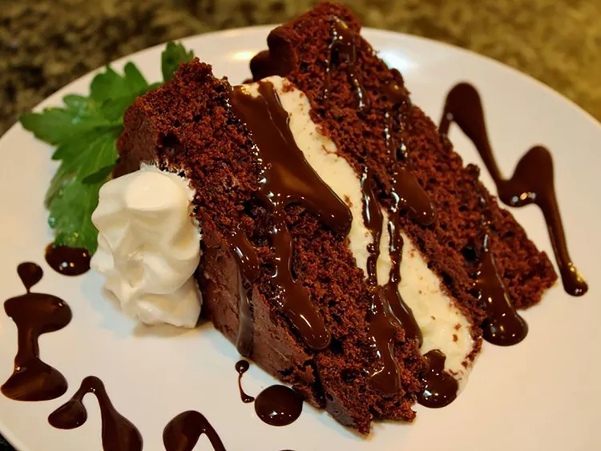

Ice Cream Cake

Description
This ice cream cake is easy to make with any flavor of ice cream or cake mix you prefer. Frost with your favorite frosting, fudge topping, crushed Oreos, or anything!
Ingredients
- 1 box of cake mix (any flavor)
- 2 pints of ice cream (any flavor)
- 1 cup of frosting (any flavor)
- 1/2 cup of fudge topping
- Crushed Oreos or other toppings (optional)
Steps
- Preheat the oven according to the cake mix instructions and bake the cake in a round pan. Let it cool completely.
- Once the cake is cooled, slice it in half horizontally to create two layers.
- Spread a layer of ice cream on the bottom half of the cake. Place the top half back on.
- Frost the top and sides of the cake with your chosen frosting.
- Drizzle fudge topping over the top and sprinkle with crushed Oreos or other toppings if desired.
- Freeze for at least 2 hours before serving.
- Enjoy your delicious ice cream cake!
Home